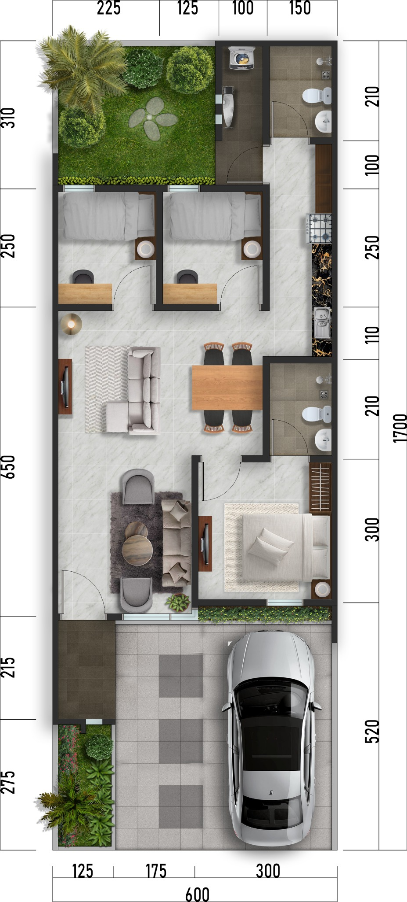

Misawa – Tipe 60/102
Foto Fasad:

Spesifikasi Bangunan:
- Luas Bangunan: 60 m²
- Luas Tanah: 102 m²
- 3 Kamar Tidur, 2 Kamar Mandi
- Carport & Taman Depan
- Lantai Granit Ukuran 60 x 60
- Atap Genteng Monier
- Dinding Bata Merah Plester Aci
- Listrik 1300W
- Air Sumur Bor
Denah Rumah:
 ← Kembali ke Beranda